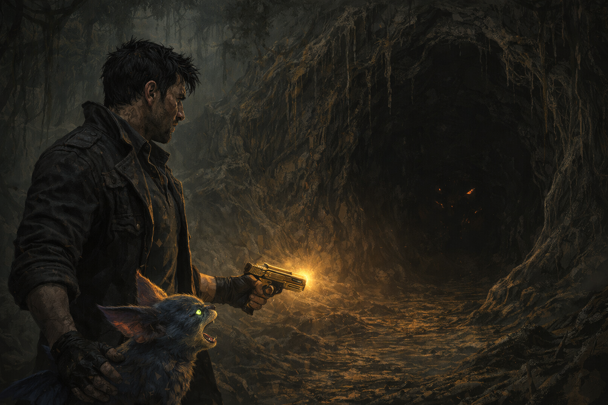

Continuamos explorando el planeta; continue sintiendo cómo la oscuridad se infiltraba en mi interior. Cada paso me hacía más consciente de lo que había hecho. La Golden Gun no era solo un arma, era una parte de mí que había decidido abandonar. Pero no podía dejar de sentir esa maldad crecer dentro de mí.
Seguimos caminando y derrepente KAWA empezo a advertirme de algo dentro de una cueva. Sentia que me estaba alertando de un peligro oculto. KAWA quería que nos alejaramos de allí.
¿Qué decides?
Opción A: Tomar a KAWA y huir de ahi